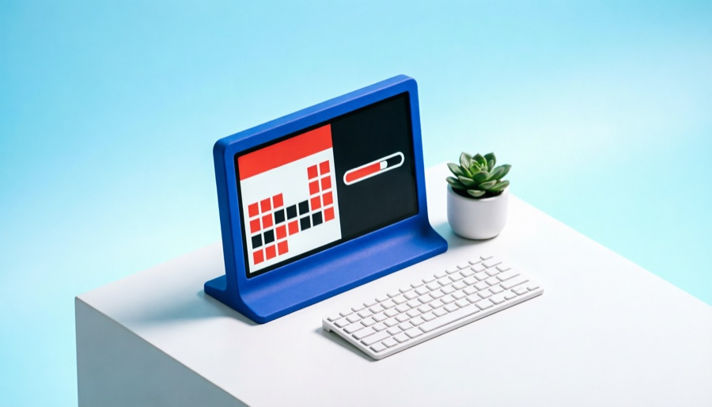
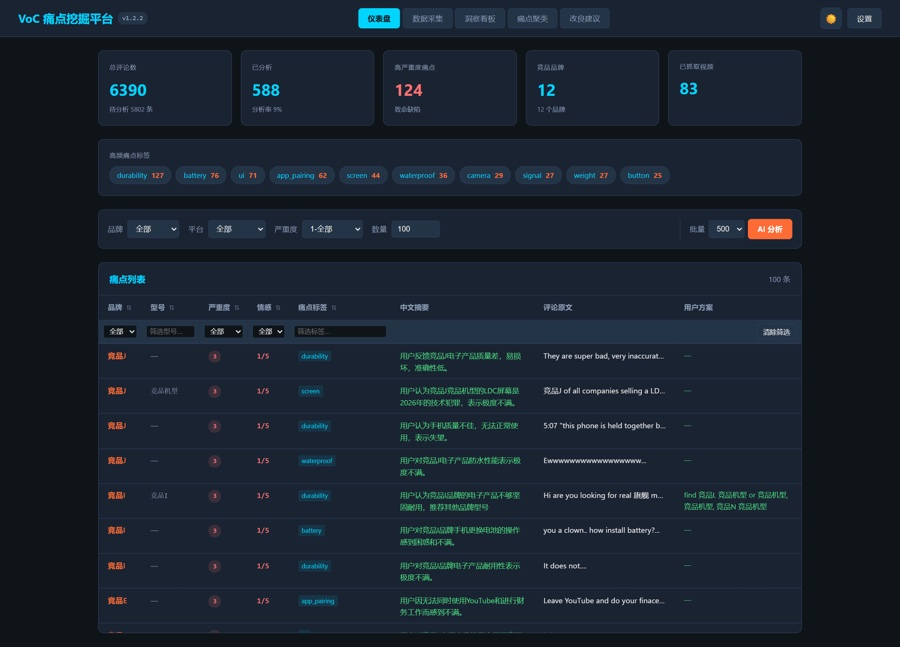
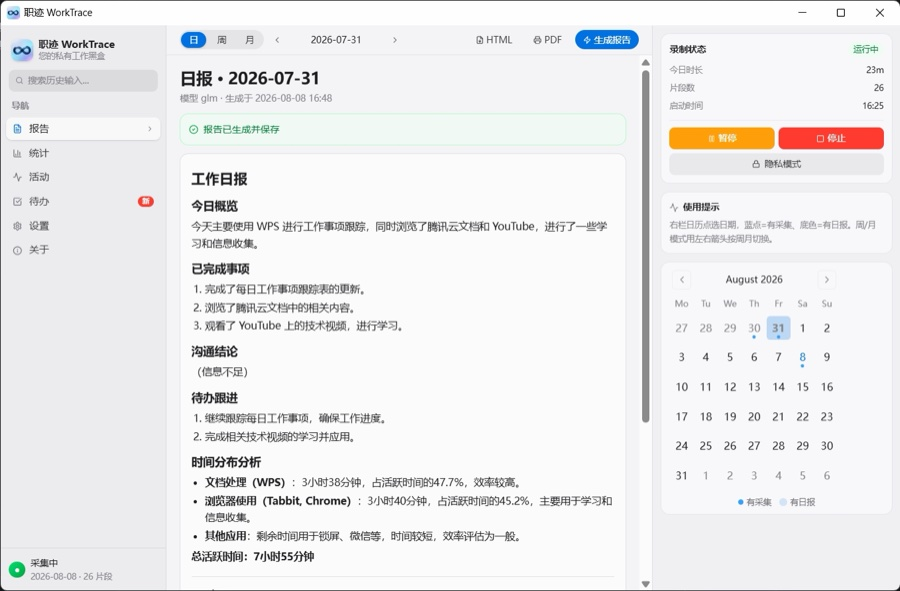
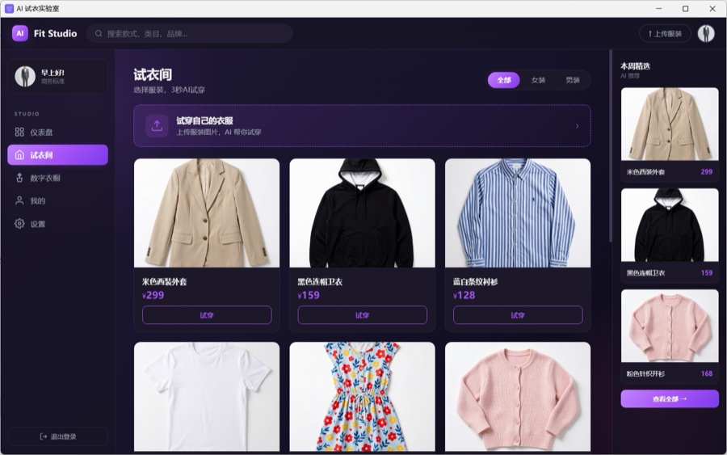

从想法到开源，落到真实场景里。硬件、数据、效率、方法论——先解决自己的问题，再做给更多人用。
独立开发 · AI 实践。关注 AI 的真实落地：从三色电子墨水屏硬件、跨境电商 Voice-of-Customer 数据挖掘，到个人效率工具与 AI 工作方法论。项目覆盖桌面端（Electron）、后端（FastAPI）、嵌入式（ESP32-C3）与大模型应用（通义千问 / 智谱 GLM / DeepSeek / Kimi / Claude）。
所有项目都从自己的真实需求出发：先解决自己的问题，再打磨成产品开源给更多人。坚持本地优先、隐私优先——数据存在本机，AI 请求直连自己配置的模型。
具体场景，具体工具。

JavaScript4.2 寸红黑白三色墨水屏：Electron 桌面端 19 个屏显模板、三色量化渲染，串口/WiFi 推送到 ESP32-C3，所见即所推。

Python海外社媒竞品评论自动抓取，多 LLM 结构化痛点提取，BGE-M3 + HDBSCAN 全局聚类，看板与 AI 改良报告输出落地建议。
对话式天赋测评生成个人画像；每日三维度复盘 + AI 双轨反馈；Grit / Insight / Optimize 三维积分进化曲线与天赋说明书。

Python本地采集输入活动、窗口上下文与剪贴板，AI 生成日报 / 周报 / 月报与周度洞察；纯本地运行，不联网上传。

HTML基于阿里云百炼 aitryon：模特照 + 服装平铺图 → 上身效果图；预设模特、商品库、数字衣橱与数据仪表盘。
Claude Skill：锁定问题 → 抽取跨域领域 → 提炼底层机制 → 强制嫁接 → 收敛 Top 3，打破同质化头脑风暴。
把工作方式本身，做成可复用的 AI 技能。
脑暴卡住、方案同质化时，用"抽领域 → 抽机制 → 强制嫁接"从无关行业借底层解法，先炸出有变化感的候选创意。
在"想出来"和"立项做"之间加一道审查关卡：六顶思考帽分轨推进，嵌入默会理论镜头，逼出明确的功能取舍决策表。
26 个技能覆盖从创意到交付的完整流程：市场调研、需求分析、创意验证、UI/UX、技术设计、测试驱动到数据迭代。
从固件到界面，从数据管道到 LLM 编排。
GitHub 上的完整清单，持续更新中。